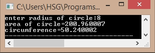

#include<stdio.h> #include<conio.h> void main() { int r; float pi=3.14,area,cu; printf("enter radius of circle:"); scanf("%d",&r); area=pi*r*r; printf("area of circle=%f",area); cu=2*pi*r; printf("\ncircumference=%f",cu); } Output: 